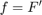
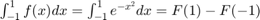
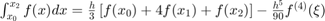
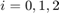

Introducción
Métodos numéricos de integración El teorema fundamental del cálculo (en una de sus versiones) se basa en encontrar una antiderivada . Conociendo dicha antiderivada se puede encontrar la integral definida de otra función . El teorema fundamental del cálculo dice:
Contents
Si es integrable, y , entonces: $
Sin embargo, a veces con los métodos de integración conocidos (cambio de variable, integración por partes, fracciones parciales, sustitución trigonométrica) no es posible hallar una antiderivada , sin embargo, el objetivo de la integración es geométricamente hallar el área encerrada por la curva de la función la recta y las rectas y . Y para ello se pueden utilizar diferentes métodos, sin necesidad de hallar una antiderivada . Estos son los métodos numéricos.
Como ejemplo, tenemos la función . De acuerdo con el teorema fundamental del cálculo,su integral de x=-1 a x=1 sería definida como:  con . Pero, ¿quién es F(x) (la antiderivada)? La respuesta es que no existe como función elemental; por tanto por los métodos tradicionales no se puede hallar la integral de esta función. Sin embargo el resultado de esta integral es aproximadamente 1.4936, determinandose por métodos numéricos.
La técnica que se utiliza para integrar en este caso es por medio de aproximación a la función mediante polinomios lo suficientemente parecidos (con el menos error posible) e integrarlos.
Fórmulas cerradas de Newton-Cotes Supongamos que tenemos la siguiente integral , y no es posible encontrar la antiderivada . Una forma de integrar es mediante la aproximación a f(x) con un polinomio de interpolación de Langrage. La teoría de Lagrange dice que si es integrable n veces, se puede hallar un polinomio que interpole a dicha función (la corte n veces en un intervalo) más un término de error. Un polinomio de interpolación de Lagrange se ve de la siguiente forma: $
con y
Si se integra, se tiene la fórmula cerrada de (n+1) puntos de Newton-Cotes. (Ver gráfica). Donde por regla general:
- -- (paso)
 con
con
Dependiendo el grado n del polinomio, se obtiene lo que se conoce como Regla del trapecio (n=1) o primer fórmula cerrada de Newton-Cotes, Regla de Simpson (n=2) o segunda fórmula cerrada de Newton-Cotes, y Regla de los tres octavos de Simpson (n=3).
Regla del trapecio (n=1)
Donde:
- -- (paso)
- con
Regla de Simpson (n=2)

Donde:
- -- (paso)
- con 
- con
Regla de los tres octavos de Simpson (n=3)
Donde:
- -- (paso)
- con
EJEMPLO
Con la función , los tres métodos anteriores se desarrollan así;
Regla del trapecio
Regla de Simpson
Regla de los tres octavos de Simpson
Ejercicio 1
1.Matlab
x=@(t)(-t+1).*(t>=0 & t<1)+(t-1).*(t>=1 & t<2);%Funcion que se desplaza..
h=@(t)(1).*(t>=0 & t<1);
convconm(x,h);
2.Analítico
latex 1.-Realizar la convolución de las siguientrs señales.\\\\ \includegraphics{PR04_1}\\\\ \newline Primer caso.\\ \newline Definimos las funciones x(t) y y(t):\\\\ \begin{equation} \label{} x(t) = \left\{ \begin{array}{ll} -t+1 & 0\le x\le 1 \\ t-1 & 1 < x < 2 \\ 0 & otro\hspace{0.2cm}caso \end{array} \right. \end{equation}\\\\ \begin{equation} \label{} y(t) = \left\{ \begin{array}{ll} 1 & 0\le x\le 1 \\ 0 & otro\hspace{0.2cm} caso \end{array} \right. \end{equation}\\\\
Tomamos y(t) fija y se transforma a y() y x(t) se transforma en x(t-$\tau$)\\ \newline -1+ t $<$0\hspace{0.5 cm} \rightarrow \hspace{0.5 cm} t< 1\\\\ \\$$\int {0}^{t} x()y()d\tau $\int _{0}^{t} (-t+$\tau$+1)d\tau \\\\ \newline Segundo caso:\\\\ Se divide en dos integrales sumadas:$\\\\ \tau$-1)d\tau +$$\int _{-1+t}^{1} (t+$\tau$+1)d\tau$$ \\\\=$$[(t\tau)-\frac{\tau^2}{2} -\tau]{0}^{-1+t}+[(-t\tau)+\frac{\tau^2}{2} +\tau]_{-1+t}^{1}$$ \\$$\newline -1+ t < 1\hspace{0.5 cm} \rightarrow \hspace{0.5 cm} t< 2$$ \\$$\newline -1+ t cm} \rightarrow \hspace{0.5 cm} t>1$$ \\\\$$=t(-1+t)-\frac{(-1+t)^2}{2}-(-1+t)-t+\frac{1}{2}+1-(-t(-1+t)+\frac{(-1+t)^2}{2}+(-1+t))$$\\ \\$$2t(-1+t)-\frac{2}{2}(-1+t)^2 - 2(-1+t)-t+\frac{3}{2}-2t+2t^2-1+2t-t^2+2-2t-t+\frac{3}{2}$$\\ \\$$=t^2-3t+\frac{5}{2} \rightarrow (2)$\\\\ \int {-2+t}^{1} (t-$\tau$-1)d\tau =[t\tau-\frac{\tau^2}{2}]{-2+t}^{1}=t- \frac{1}{2}-1-(t(-2+t)-\frac{(-2+t)^2}{2}-(-2+t)\\ \\$$\newline -2+ t < 1\hspace{0.5 cm} \rightarrow \hspace{0.5 cm} t< 3$$ \\$$\newline -2+ t >0\hspace{0.5 cm} \rightarrow \hspace{0.5 cm} t>2$$ \\\\=t-\frac{3}{2}+2t-t^2+\frac{4}{2}-\frac{4t}{2}+\frac{t^2}{2}-2+t$$ $ \\\\\hspace{0.2 cm} la\hspace{0.2 cm} función\hspace{0.2 cm} de\hspace{0.2 cm} convolución\hspace{0.2 cm} es: \\\\ \begin{equation} \label{} h(t) = \left\{ \begin{array}{ll} -\frac{t^2}{2}+t & 0\le x\le 1 \\\\ t^2-3t+\frac{5}{2}& 1\le x\le 2 \\\\ -\frac{t^2}{2}+2t-\frac{3}{2} & 2\le x\le 3 \\\\ 0 & otro\hspace{0.2cm} caso \end{array} \right. \end{equation}\\\\ <\latex
Ejercicio 2
%1.Matlab
x=@(t)(1).*(t>=1 & t<3);
h=@(t)(t).*(t>=0 & t<1)+(1).*(t>=1 & t<2);
convconm(x,h);

%2.Analítico % * \newpage 2.-Realizar la convolución de las siguientrs señales.\\\\ % *\includegraphics{PR04_2}$$\\\\ % *\\$$\newline -1+ t \leq 0\hspace{0.5 cm} \rightarrow \hspace{0.5 cm} t\leq 1 \hspace{0.5 cm} para \hspace{0.2 cm}t =0$$\\ % *$$\\m=1\rightarrow \hspace{0.5 cm} y=x \hspace{0.5 cm} Entonces:$$\\\\ % *$$\int _{0}^{-1+t} (\tau)d\tau = [\frac{1}{2}\tau^2]_{0}^{-1+t}=\frac{1}{2}(-1+t)^2-0\\\\ % *=\frac{1}{2}(1-2t+t^2)=\frac{1}{2}-t+\frac{1}{2}t^2 \hspace{0.5 cm}Para\hspace{0.3 cm} t=3 % *\\\\Por\hspace{0.3 cm} lo\hspace{0.3 cm} tanto: 0< t \leq3$$ % *$$\int _{-2+t}^{2}d\tau = [\tau]_{-2+t}^{2}= 2 -(-3+t)=2+3-t= 5+t \hspace{0.5 cm}Para\hspace{0.3 cm} t=5 % *\\\\Por\hspace{0.3 cm} lo\hspace{0.3 cm} tanto: 3< t \leq5$$\\ % *\\$$Si\hspace{0.5 cm} 2\leq-3+t \rightarrow \hspace{0.5 cm} t\geq 5 \hspace{0.5 cm}Para\hspace{0.3 cm} t=0 % *\\\\\hspace{0.2 cm} la\hspace{0.2 cm} función\hspace{0.2 cm} de\hspace{0.2 cm} convolución\hspace{0.2 cm} es: \\\\ % *\begin{equation} % * \label{} % * h(t) = \left\{ % * \begin{array}{ll} % * 0 & t\le 1 \\\\ % * \frac{1}{2}-t+\frac{1}{2}t^2& 1\le t\le 3 \\\\ % * % * 5+t & 3< t\le 5\\\\ % * 0 & t\geq 5 % * \end{array} % * \right. % * \end{equation}\\\\
Ejercicio 3
g = @(t)((t>=0&t<=3)-2.*(t>=3&t<=4)+(t>=3&t<=4)) f = @(t) -(-(t<=0&t>=-3)+2.*(t<=-3&t>=-4)-(t<=-3&t>=-4)) convconm(g,f)
g =
function_handle with value:
@(t)((t>=0&t<=3)-2.*(t>=3&t<=4)+(t>=3&t<=4))
f =
function_handle with value:
@(t)-(-(t<=0&t>=-3)+2.*(t<=-3&t>=-4)-(t<=-3&t>=-4))
Realizar la autocorrelación de:

%$$X_1(t)=U(t)-2u(t-3)tu(t-4)$$ %$$si -t \leq 0 \rightarrow t\geq\hspace{.2cm} 0\hspace{.2cm} para\hspace{.2cm} t\hspace{.2cm} =\hspace{.2cm}0$$ %$$ \int_{-3-t}^{t} f(\tau)d\tau= \tau \hspace{.2cm}Evaluada\hspace{.2cm} de\hspace{.2cm} -3-t \hspace{.2cm}a\hspace{.2cm} t\hspace{.2cm} =3-(t-3)=3t+t$$ %$$-3\leq -3-t \leq 0 \rightarrow 0\leq -t \leq 3 \rightarrow 0\geq t \geq 3 $$ %$$ \int_{-4t}^{1} 2d\tau + \int_{-3-t}^{3}d\tau + \int_{-t}^{-4} 2d\tau $$ %$$ 2\tau\hspace{.2cm}Evaluado\hspace{.2cm} de\hspace{.2cm} -4-t\hspace{.2cm} a \hspace{.2cm}1\hspace{.2cm} + \tau \hspace{.2cm}Evaluado\hspace{.2cm} de\hspace{.2cm} -3-t\hspace{.2cm} a \hspace{.2cm}3\hspace{.2cm} + 2\tau \hspace{.2cm}Evaluado\hspace{.2cm} de\hspace{.2cm} -t\hspace{.2cm} a \hspace{.2cm}4\hspace{.2cm}$$ %$$0\leq -4-t \leq 4 \rightarrow 4\leq-t \leq 8 \rightarrow -4\geq t \geq-8$$ %$$2+8+t+3+3+t$$ %$$24+4t$$ %$$= \int_{3}^{3-t}d\tau = \tau \arrowvert_{3}^{-3-t} = -3-t-3$$ %$$-6-t$$ %$$3\leq-4-t\leq 4 + -7\leq-t\leq 8 \rightarrow -7 \geq t \geq-8$$ %$$ Si \hspace{.2cm} -4-t\geq 4 \rightarrow -4-4\geq t \rightarrow -8\geq t \hspace{.2cm}para \hspace{.2cm}t=0$$ %\[ %g(t) = %\begin{cases} %0\hspace{2cm} t\geq 0 \\ %6+t \hspace{2cm}0 \geq t\geq 3 \\ %24+4t \hspace{2cm} -4\geq t \geq-8 \\ %-6-t \hspace{2cm} -7\geq t \geq-8 \\ %0\hspace{2cm} -8\geq t %\end{cases} %\] %
Ejercicio 4
g = @(t)((t>=0&t<=2)-2.*(t>=2&t<2)-(t>=2&t<=4)) %%Es la que se desplaza
f = @(t) -(-(t<=0&t>=-3)+2.*(t<=-3&t>=-4)-(t<=-3&t>=-4))
convconm(g,f)
g =
function_handle with value:
@(t)((t>=0&t<=2)-2.*(t>=2&t<2)-(t>=2&t<=4))
f =
function_handle with value:
@(t)-(-(t<=0&t>=-3)+2.*(t<=-3&t>=-4)-(t<=-3&t>=-4))